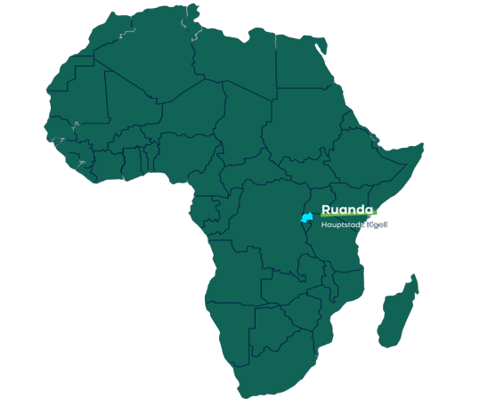

<section
  class="bg-[#001240] flex justify-center diagonal-pri -mt-[28rem] w-screen"
>
  <article class="text-white pt-40 md:pb-36 md:-mt-40 md:pt-28 max-w-[1500px]">
    <section class="px-[7%]">
      <!-- paragraphs division -->
      <div>
        <h3 class="text-2xl font-semibold max-w-xl mb-5">
          Ruanda - ein Land der
          <span class="text-[#8acc50]">Sub-Sahara</span> mit viel Potential
        </h3>
        <p class="max-w-xl mb-28">
          kurze Einführung über 4-5 Zeilen At vero eos et accusam et justo duo
          dolores et ea rebum. Stet clita kasd gubergren, no sea takimata
          sanctus est L vero eos et accusam et justo duo dolores et ea rebum.
          Stet clita kasd gubergren, no sea takimata sanctus est L
        </p>
      </div>

      <!-- map section -->
      <div
        class="grid grid-cols-2 md:grid-cols-1 bg-gradient-to-r from-[#8acc506b] to-[#001240] relative w-2/3 md:w-full"
      >
        <div class="py-16 pl-16 flex flex-col space-y-5 md:pl-2">
          <div class="font-bold text-xl relative">
            <p class="whitespace-nowrap">
              Ein stetig wachsender Markt und Talentpool
            </p>
            
          </div>
          <!-- 1 -->
          <div class="flex space-x-2">
            <span>.</span>
            <p class="font-extralight md:w-4/5">
              durchschnittliches jährliches BIP-Wachstum von 7,2 Prozent (2021)
              (The World Bank, 2022)
            </p>
          </div>
          <!-- 2 -->
          <div class="flex space-x-2">
            <span>.</span>
            <p class="font-extralight">
              Einwohnerzahl: 13,46 Millionen (2021) prognostizierte Wachstumrate
              von 1,4 % pro Jahr bis 2050
            </p>
          </div>
          <!-- 3 -->
          <div class="flex space-x-2">
            <span>.</span>
            <p>~70% der Einwohner*innen sind unter 30 Jahre</p>
          </div>
          <!-- 4 -->
          <div class="flex space-x-2">
            <span>.</span>
            <p class="font-extralight">
              wachsender Markt an bilingual ausgebildeten Arbeitskräften
            </p>
          </div>
          <!-- 5 -->
          <div class="flex space-x-2">
            <span>.</span>
            <p class="font-extralight">
              Größer Frauenanteil (61 %) im Parlament weltweit
            </p>
          </div>
        </div>

        
      </div>
    </section>

    <section
      class="mt-28 bg-gradient-to-r from-[#8acc506d] to-[#001240] flex justify-between pt-16 px-32 pb-52 gap-12 sm:space-x-0 md:flex-col md:px-2 md:justify-start md:items-start md:gap-6 md:py-8 md:pb-20"
    >
      <div class="flex items-center space-x-5">
        
        <p class="max-w-xs">stetig wachsender Markt und Talentpool</p>
      </div>
      <div class="flex items-center space-x-5">
        
        <p>sehr gutes Investitionsklima</p>
      </div>
      <div class="flex items-center space-x-5">
        
        <p>ausgezeichnete Infrastruktur und hoher Digitalisierungsgrad</p>
      </div>
    </section>
  </article>
</section>
